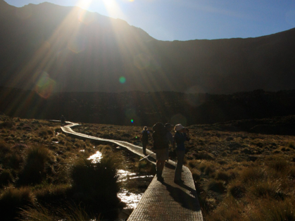
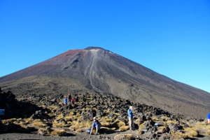
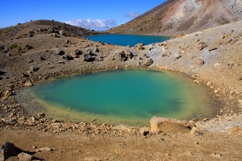

Tongariro National Park

På vulkaner - fridag 2
onsdag den 27. februar 2008

kl. 24.05 - Viola har vokseværk, og kommer ned for at sove mellem Camilla og jeg. Vokseværket forsvinder på mirakuløs vis få sekunder efter ...
Kl. 5.45 - Stella græder, hun fryser og har smidt dynen. Camilla kravler op og varme hende, og jeg tænder for varmen i bilen.
Kl. 6.23 - Mit mobiltelefonvækkeur skal ringe om 2 minutter, men jeg er allerede vågen, så jeg slår det fra, ligger et par minutter, før jeg tager mig sammen, hopper i det tøj, jeg har besluttet at gå i: en langærmet t-shirt, en kortærmet og min uundværlige fleece trøje, samt korte bukser. Jeg pakker mine toilet ting, og lister ud af bilen. Der er rimfrost i græsset og det er stadig mørkt, men der er livlig aktivitet på campingpladsen, hvor alle åbenbart skal op og kravle i dag. De første biler er klar til at køre.
Kl. 6.45 - Spiser morgenmad alene, putter de sidste ting i rygsækken og tjekker at alt er klart.
Kl. 7.10 - Strømmen er taget, gassen er slukket, vinduerne er lukket og de fleste ting er nødtørftigt stuvet af vejen. Camilla er kravlet ned og putter bag i bilen med pigerne. Jeg starter camperen og kører med startstedet for Tongariro Alpine Crossing. Vi var der jo i går, så jeg ved nogenlunde hvor lang tid det tager. Ville gerne have været afsted kl. 7, men det går nok.
Kl. 7.35 - Fremme ved parkeringspladsen, der er forbavsende mange mennesker, og mens jeg gør mig klar, ankommer yderligere 2 busser. Så det er bare med at komme afsted. Kysser pigerne farvel, mens Camilla går med op for at tage et afskedsfoto.
Kl. 7.45 - Farvelkram til Camilla og så afsted. Forude venter 18.5 km trekking, 3 store vulkaner, nogle drastiske opstigninger, et summit i 1900 meters højde, kort sagt NZs mest populære dagstrekkingtur.
Kl. 8.45 - Fremme ved Soda Springs. Solen er dukket op over bjergkammen, men det meste af dalen ligger stadig i skygge, så det er koldt. Tiden er fin.

Kl. 9.15 - Når drivvåd af sved toppen af Mangatepopo Saddle, efter at have kravlet “The Devils Staircase”. Tiden er stadig fin, men jeg har mistet min kasket på vej op. Det dur ikke at vende om, så de næste mange timer i sol fra skyfri himmel bliver uden cap. Hvis man har rigtig gode ben, er der et sidetrack herfra op til toppen af Mount Ngauruhoe i 2287 meter. Læg venligst 3 timer til turens længde. Jeg springer over.
Kl. 10.15 - Når toppen af “The Red Crater” i 1886 meters højde. Udsigten er for vild. Det ryger op fra jorden med svovldampe, og man kan se helt til Mount Taranaki i vest, fordi vejret bare er suverænt.

Kl. 10.25 - Hopper ned af bjerget, mens jorden ruller under fødderne. Støvlerne fyldes med småsten, men det er lidt som at stå på ski og ret sjovt. Nedenfor ligger “The Emerald lakes - tre små purpurgrønne bjergsøer, så smukke at man tror det er løgn. Jeg åbner min medbragte Red Bull og gør klar til at gå tværs henover Central Crater for at kravle op til Te Wai-whakaata-o-te-Ranghirora (Det Mauriske navn for Blue lake, der oversat betyder Ranghiroras spejl)
Kl. 11.20 - er fremme ved Ketetahi Hut. Jeg har gået stærkt, og har derfor de sidste timer gået helt for mig selv. Der er dog 8-10 andre ved hytten. Sætter mig i solen og spiser min medbragte madpakke. Opdager at der er mobildækning, og ringer hjem til Holbæk for at sige tillykke med fødselsdagen til min mor :)
Kl. 11.35 - klar til sidste del af etapen, ca. 6-7 km først igennem dalen og bagefter gennem noget skov. Er stadig alene, så jeg tager høretelefoner på og hører Earth, Wind & Fires greatest hits, mens jeg trasker afsted i et godt tempo. Passerer Ketetahi Springs, hvor jorden er i alle mulige farver pga mineralerne. Det damper heftigt og lugter ikke al for godt.
Kl. 12.45 - har nu gået i 5 timer og er stadig i skoven. Trinnene er høje, men det går nedad. Kan mærke mine ben, men er egentlig frisk nok.
Kl. 12.55 - Parkeringspladsen åbner sig pludselig foran mig. Her er mennesketomt, kun 2 andre holder hvil, de fleste er på vej ned. Der har været fart på, hvilket sikkert skyldes at man er alene, men det har været en af de bedste oplevelser på turen. Solen skinner og Camilla griner fra camperen, der allerede holder hernede og venter. Det kan ikke være meget bedre.
Tak for en dejlig tur!
/Tim
Solen er netop stået op over bjergene. Det er stadig tidligt på turen, men allerede utrolig smukt.